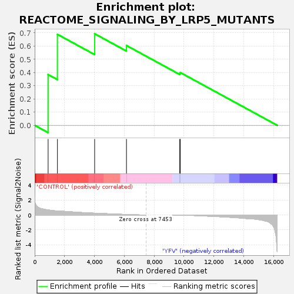
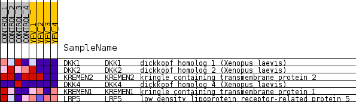
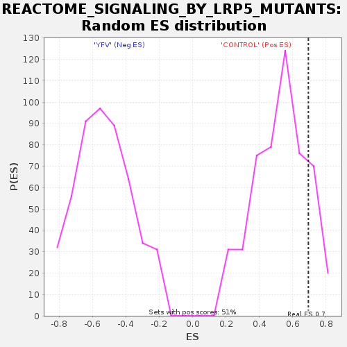

| Dataset | MATRIZ_GSE99081_collapsed_to_symbols.gsea_CLASE_99081.cls#CONTROL_versus_YFV |
| Phenotype | gsea_CLASE_99081.cls#CONTROL_versus_YFV |
| Upregulated in class | CONTROL |
| GeneSet | REACTOME_SIGNALING_BY_LRP5_MUTANTS |
| Enrichment Score (ES) | 0.693472 |
| Normalized Enrichment Score (NES) | 1.3073334 |
| Nominal p-value | 0.12450593 |
| FDR q-value | 0.9783277 |
| FWER p-Value | 1.0 |

| SYMBOL | TITLE | RANK IN GENE LIST | RANK METRIC SCORE | RUNNING ES | CORE ENRICHMENT | |
|---|---|---|---|---|---|---|
| 1 | DKK1 | dickkopf homolog 1 (Xenopus laevis) | 900 | 0.674 | 0.3843 | Yes |
| 2 | DKK2 | dickkopf homolog 2 (Xenopus laevis) | 1523 | 0.526 | 0.6890 | Yes |
| 3 | KREMEN2 | kringle containing transmembrane protein 2 | 4015 | 0.242 | 0.6935 | Yes |
| 4 | DKK4 | dickkopf homolog 4 (Xenopus laevis) | 6147 | 0.065 | 0.6044 | No |
| 5 | KREMEN1 | kringle containing transmembrane protein 1 | 9717 | -0.012 | 0.3926 | No |
| 6 | LRP5 | low density lipoprotein receptor-related protein 5 | 9749 | -0.014 | 0.3998 | No |

